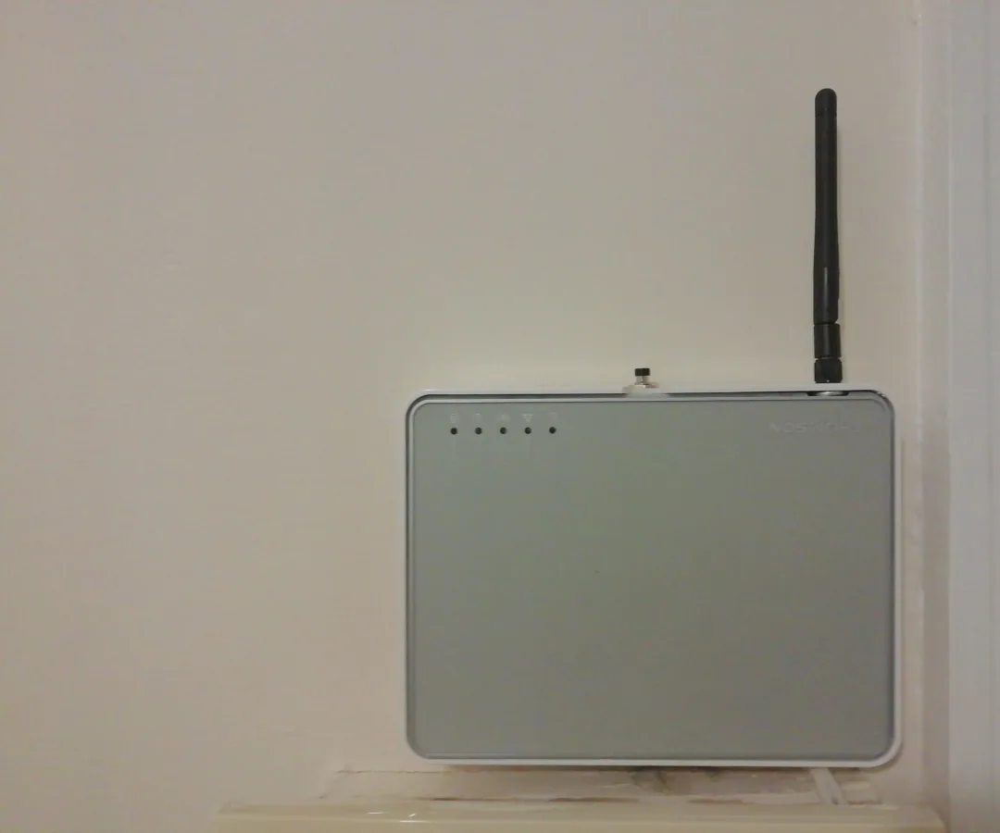

ltchiptool
Dump stock firmware and evaluate an alternative-firmware flashing path
Showing records 121–180; filtering loads all pages in this category.
Dump stock firmware and evaluate an alternative-firmware flashing path

The goal is to configure Tasmota for Luminea NX-4458 so its switch, light, plug or sensor can be controlled locally through the web UI, MQTT or a home-automation system.

The goal is to configure Tasmota for Luminea RGBW (ZX-2844) so its switch, light, plug or sensor can be controlled locally through the web UI, MQTT or a home-automation system.

The goal is clear: use an ESPHome configuration for LUTEC Origo, reduce dependence on the vendor cloud and connect it to a local system such as Home Assistant.

The goal is to configure Tasmota for M5Stack Core2 (K010) so its switch, light, plug or sensor can be controlled locally through the web UI, MQTT or a home-automation system.

The goal is to configure Tasmota for MagicHome RGBW RF (ZJ-WFMN-B VL1) so its switch, light, plug or sensor can be controlled locally through the web UI, MQTT or a home-automation system.

The goal is clear: use an ESPHome configuration for Makerfabs 8CH Button Controller, reduce dependence on the vendor cloud and connect it to a local system such as Home Assistant.

The goal is to configure Tasmota for Martin Jerry Matter 2 Gang (RP-S02) so its switch, light, plug or sensor can be controlled locally through the web UI, MQTT or a home-automation system.
 Fallback
FallbackThe goal is clear: use an ESPHome configuration for Martin Jerry MJ S01, reduce dependence on the vendor cloud and connect it to a local system such as Home Assistant.
FallbackThe goal is clear: use an ESPHome configuration for Martin Jerry US SS02, reduce dependence on the vendor cloud and connect it to a local system such as Home Assistant.

The goal is to configure Tasmota for Maxcio WF-CS01 so its switch, light, plug or sensor can be controlled locally through the web UI, MQTT or a home-automation system.

The goal is to configure Tasmota for Merkury 6-1/2 ft (9100330) so its switch, light, plug or sensor can be controlled locally through the web UI, MQTT or a home-automation system.

The goal is clear: use an ESPHome configuration for Mi Desklamp, reduce dependence on the vendor cloud and connect it to a local system such as Home Assistant.

The goal is to configure Tasmota for MiBoxer Dual White (FUT035W) so its switch, light, plug or sensor can be controlled locally through the web UI, MQTT or a home-automation system.

The goal is clear: use an ESPHome configuration for Milfra Smart Dimmer Switch, reduce dependence on the vendor cloud and connect it to a local system such as Home Assistant.

The goal is to configure Tasmota for Minitiger 2 Gang (FS-WC-E01) so its switch, light, plug or sensor can be controlled locally through the web UI, MQTT or a home-automation system.

The goal is to configure Tasmota for Mirabella 9W 800lm (I003293) so its switch, light, plug or sensor can be controlled locally through the web UI, MQTT or a home-automation system.

The goal is to configure Tasmota for Mirabella Genio 9W 800lm WW (I002332) so its switch, light, plug or sensor can be controlled locally through the web UI, MQTT or a home-automation system.

The goal is clear: use an ESPHome configuration for Mirabella Genio Cold Warm White Bulbs, reduce dependence on the vendor cloud and connect it to a local system such as Home Assistant.
FallbackThe goal is clear: use an ESPHome configuration for Mirabella Genio White Bulb, reduce dependence on the vendor cloud and connect it to a local system such as Home Assistant.
FallbackThe goal is clear: use an ESPHome configuration for MJ SJ01, reduce dependence on the vendor cloud and connect it to a local system such as Home Assistant.

The goal is to configure Tasmota for Moes 2 Gang (MS-105B) so its switch, light, plug or sensor can be controlled locally through the web UI, MQTT or a home-automation system.

The goal is clear: use an ESPHome configuration for Moes IR Thermostat S16Pro, reduce dependence on the vendor cloud and connect it to a local system such as Home Assistant.

The goal is to configure Tasmota for MoKo 2 Gang so its switch, light, plug or sensor can be controlled locally through the web UI, MQTT or a home-automation system.

The goal is to configure Tasmota for Nedis 6W 450lm (WIFILC10WTB22) so its switch, light, plug or sensor can be controlled locally through the web UI, MQTT or a home-automation system.

The goal is to configure Tasmota for Nedis P110 (WIFIP110FWT) so its switch, light, plug or sensor can be controlled locally through the web UI, MQTT or a home-automation system.

The goal is clear: use an ESPHome configuration for Nexx NXG 100, reduce dependence on the vendor cloud and connect it to a local system such as Home Assistant.

The goal is to configure Tasmota for NGS Loop Track 16A (SMT-PWR-0003) so its switch, light, plug or sensor can be controlled locally through the web UI, MQTT or a home-automation system.

The goal is clear: use an ESPHome configuration for Nous A4t, reduce dependence on the vendor cloud and connect it to a local system such as Home Assistant.

The goal is to configure Tasmota for Nous CCT Desk Lamp (S1) so its switch, light, plug or sensor can be controlled locally through the web UI, MQTT or a home-automation system.

Evaluate converting an existing wall panel into a Home Assistant control interface

The goal is clear: use an ESPHome configuration for NX SP201 Smart Plug, reduce dependence on the vendor cloud and connect it to a local system such as Home Assistant.

The goal is to configure Tasmota for Oeegoo 15W RGBCCT (OEE216) so its switch, light, plug or sensor can be controlled locally through the web UI, MQTT or a home-automation system.

The goal is to configure Tasmota for OpenEnergyMonitor WiFi MQTT Thermostat (WIFI_RELAY_) so its switch, light, plug or sensor can be controlled locally through the web UI, MQTT or a home-automation system.

Evaluate a local MQTT bridge for older remotes, sensors, and BLE broadcasters
FallbackThe goal is clear: use an ESPHome configuration for Orno Single Phase Energy meter OR WE 514, reduce dependence on the vendor cloud and connect it to a local system such as Home Assistant.

The goal is clear: use an ESPHome configuration for OXT 1ch dimmer, reduce dependence on the vendor cloud and connect it to a local system such as Home Assistant.

The goal is clear: use an ESPHome configuration for Pentek Intellidrive PID10, reduce dependence on the vendor cloud and connect it to a local system such as Home Assistant.

The goal is to configure Tasmota for Poweradd so its switch, light, plug or sensor can be controlled locally through the web UI, MQTT or a home-automation system.

The goal is to configure Tasmota for Prime Smart Outlet (CCWFIO232PK) so its switch, light, plug or sensor can be controlled locally through the web UI, MQTT or a home-automation system.

The goal is to configure Tasmota for Qnect 16A (QN-WP01) so its switch, light, plug or sensor can be controlled locally through the web UI, MQTT or a home-automation system.

The goal is clear: use an ESPHome configuration for refoss p11 plug, reduce dependence on the vendor cloud and connect it to a local system such as Home Assistant.

The goal is to configure Tasmota for Remote Control (QRA2) so its switch, light, plug or sensor can be controlled locally through the web UI, MQTT or a home-automation system.

The author reuses a failed Thomson TG585 router case, switch, LEDs and power connector to house a home-automation prototype.

The goal is to configure Tasmota for RJWF-02A so its switch, light, plug or sensor can be controlled locally through the web UI, MQTT or a home-automation system.

The goal is clear: use an ESPHome configuration for RSH WiFi Sky01, reduce dependence on the vendor cloud and connect it to a local system such as Home Assistant.

Bring data from older wireless sensors into local automation.

The goal is clear: use an ESPHome configuration for SANPU TYZ150 W2V24, reduce dependence on the vendor cloud and connect it to a local system such as Home Assistant.

The goal is to configure Tasmota for Saudio 7W 700lm (1910005DQ) so its switch, light, plug or sensor can be controlled locally through the web UI, MQTT or a home-automation system.

The goal is clear: use an ESPHome configuration for Shelly 1 Gen4, reduce dependence on the vendor cloud and connect it to a local system such as Home Assistant.

The goal is to configure Tasmota for Shelly 1 so its switch, light, plug or sensor can be controlled locally through the web UI, MQTT or a home-automation system.
 Fallback
FallbackThe goal is clear: use an ESPHome configuration for Shelly 1PM, reduce dependence on the vendor cloud and connect it to a local system such as Home Assistant.
FallbackThe goal is clear: use an ESPHome configuration for Shelly Duo GU10, reduce dependence on the vendor cloud and connect it to a local system such as Home Assistant.

Evaluate converting an existing Shelly device into a local HomeKit accessory

The goal is clear: use an ESPHome configuration for Shelly i4 Gen3, reduce dependence on the vendor cloud and connect it to a local system such as Home Assistant.
FallbackThe goal is clear: use an ESPHome configuration for Shelly Plug S, reduce dependence on the vendor cloud and connect it to a local system such as Home Assistant.

The goal is to configure Tasmota for Shelly Plus 0-10V Dimmer (SNDM-00100WW) so its switch, light, plug or sensor can be controlled locally through the web UI, MQTT or a home-automation system.

The goal is clear: use an ESPHome configuration for Shelly Plus 1PM, reduce dependence on the vendor cloud and connect it to a local system such as Home Assistant.

The goal is clear: use an ESPHome configuration for Shelly Plus i4, reduce dependence on the vendor cloud and connect it to a local system such as Home Assistant.

The goal is clear: use an ESPHome configuration for Shelly Pro RGBWW PM, reduce dependence on the vendor cloud and connect it to a local system such as Home Assistant.
Remove a filter or try another device/model term.